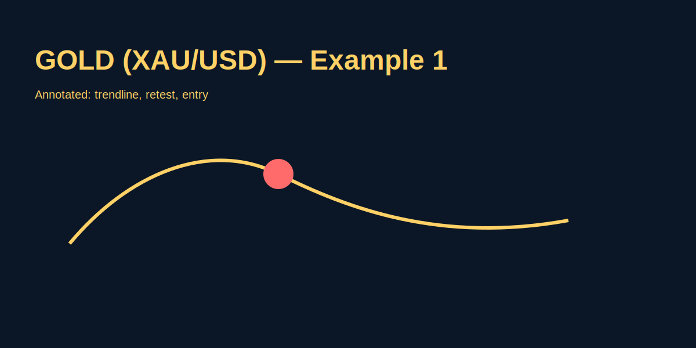

What Is Forex Trading
Problem-based introduction
Aap naye ho trading mein aur confused ho ki "Forex trading kya hota hai?" — simple words mein, forex trading currencies ka exchange hai jise traders short-term ya long-term trade karte hain. Beginners ko aksar yeh problem hoti hai: market bahut bada lagta hai, jargon zyada hai, aur risk samajh mein nahi aata. Is article mein hum step-by-step, Hinglish mein samjhayenge ki forex kya hai, kaise kaam karta hai, aur practical GOLD (XAU/USD) example ke through trade logic dekhenge.
Step-by-step explanation
- Market ka basic: Forex is a global market where currencies are bought and sold. Example pair: XAU/USD (Gold priced in USD).
- Currency pair: First symbol is base (XAU), second is quote (USD). A price 1950.00 means 1 ounce of gold = $1950.
- Buy vs Sell: If you expect GOLD to rise, you buy (long). Expect fall → sell (short).
- Lot size & Leverage: Brokers offer lot sizes and leverage; understand margin before trading.
- Order types: Market, limit, stop — use stop-loss to control risk.
Real trading logic (GOLD example)
Suppose XAU/USD is trading at 1950.50. A simple swing-trade logic:
- Identify trend on daily chart — price above 50 EMA = bullish bias.
- Wait for a retracement to a support zone near 1938–1945 (measured using recent swings).
- Place a limit buy at 1942 with stop-loss at 1928 (14 points below entry) and target at 1974 (32 points reward) — this gives ~2.3:1 risk-reward.
- Position sizing: risk 1% of account. If account = $2000, 1% = $20 allowed risk. With stop 14 points (14 * pip value), calculate lot size accordingly (see Position Sizing article).
Image-based examples (mandatory)
Below is an example chart snapshot showing the retracement and entry area. (Example image, annotate in editor for production.)
Image explanation: green box = support, arrow = ideal entry, red line = stop-loss, blue = take-profit.
Common Mistakes
- Over-leveraging: chhota account + high leverage = fast losses.
- No stop-loss: leaving trades unprotected invites big drawdowns.
- Chasing entries: entering after big moves instead of waiting for structured setup.
- Ignoring spread and trading costs — GOLD spreads can widen during news.
Pro Tips
- Use higher timeframe to define trend, lower timeframe to time entries.
- Prefer cleaner charts — remove too many indicators; price action clarity helps.
- Practice on demo for several months before going live.
- Keep a trading journal; record entries, reasoning, outcome.
Risk Warning
Trading forex and commodities like GOLD involves risk. Past performance is not indicative of future results. Never risk money you cannot afford to lose. This article is educational and does not provide financial advice.
SEO FAQs
- 1. What is forex trading for beginners?
- Forex trading means buying and selling currency pairs. For beginners, start with demo, learn lots, and control risk.
- 2. Can I trade forex in India?
- Yes, but Indian traders must follow local regulations and often trade currency derivatives or offshore brokers; check local laws (see Is Forex Trading Legal in India).
- 3. Is GOLD (XAU/USD) a good instrument for beginners?
- GOLD is liquid and popular, but it can be volatile. Beginners should learn risk management before trading GOLD live.
- 4. How much capital do I need to start forex trading?
- Start small. Practical minimum depends on broker and leverage; focus on risk per trade, not account size.
- 5. What's the difference between demo and real trading?
- Demo simulates prices but not real emotions. Transition gradually and keep position sizes small when starting live.